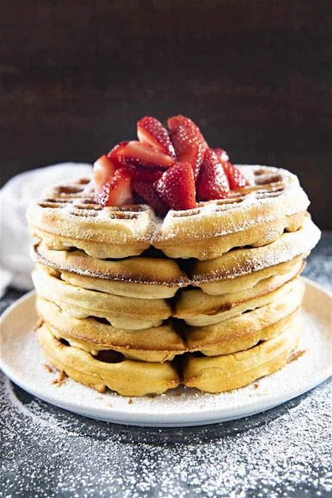

Belgian Waffles

Description
This Homemade Belgian Waffle Recipe is easy and makes delicious, authentic, Belgian waffles! These waffles are perfectly crisp and golden on the outside while being light and fluffy on the inside!
Ingredients
- 2 ¼ cups All Purpose Flour
- 1 tablespoon Baking Powder
- 3 tablespoons Sugar
- ½ teaspoon Salt
- 1 teaspoon Cinnamon
- 2 Large Eggs (Separated)
- ½ cup Vegetable Oil
- 2 cups Milk
- 1 teaspoon Vanilla Extract
Steps
- Preheat your waffle iron, spray with non stick cooking spray and set aside.
- In a large bowl whisk together the flour, baking powder, sugar, salt, and cinnamon.
- In a medium bowl beat the egg whites with a hand mixer until stiff peaks form. Set aside.
- In a separate medium bowl mix together the egg yolks, vegetable oil, milk, and vanilla extract.
- Add the egg yolk mixture to the dry ingredients and mix well.
- Fold in the egg whites.
- Pour the batter onto your hot waffle iron and cook according to manufacturer's directions.
- Serve immediately with butter, syrup, powdered sugar or any other favorite toppings.